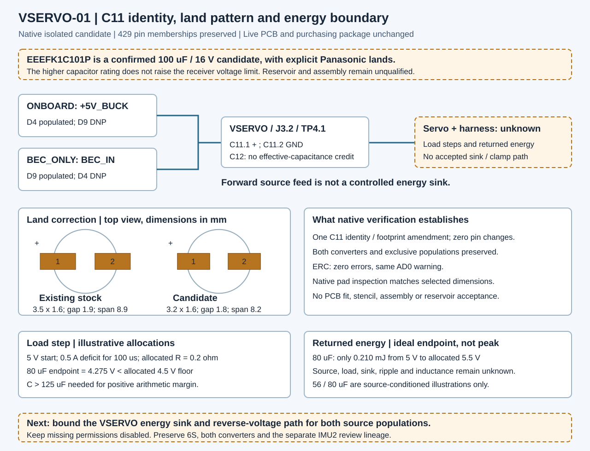

Current deficit
Idealized endpoint after the load step
Margin above the allocated floor
V_after = V_start − I_deficit × R − I_deficit × time / C
Inspect two different demands on C11: a brief current deficit lowers the rail, while net returned energy raises it. These are conditional calculations for an isolated candidate.
The actual ESC, BEC, servo and receiver voltage limits are unknown. C11's 16 V rating does not set a safe VSERVO voltage. A positive arithmetic margin approves neither the component nor an application.
Choose a capacitance condition and a net returned-energy example. The load-step allocation stays fixed so each condition is directly comparable.
V_after = V_start − I_deficit × R − I_deficit × time / C
V_after = √(V_start² + 2 × E_net / C)
At equality the floor has zero margin. If the resistive drop consumes the voltage window, no finite capacitor can provide positive margin in this model.
At equality the ceiling has zero margin. Extra capacitance does not resolve an unknown voltage envelope or omitted peak-voltage behavior.
Current means the deficit after source contribution. The calculation does not assume that the capacitor supplies the entire actuator demand. Energy means the net amount retained after other paths. It is not a measured regenerative event.
The load step includes only a constant allocated series-resistance drop. The returned-energy equation omits the instantaneous ESR and inductive peak. Neither calculation models converter response, ripple heating, reverse voltage or service life.
The isolated amendment changes C11's identity and land pattern while preserving every electrical pin membership. BEC_ONLY and ONBOARD remain exclusive populations; the live board, BOM and firmware are unchanged.

The annotated drawing is a review aid. Open the captured native Power sheet to inspect the actual candidate connections.
Next: define the energy sink and reverse-voltage boundary for both source populations. Establish the receiver envelope, source behavior, returned energy/current, repetition and harness inductance before selecting a clamp or source-return path. Diode leakage is not a guaranteed energy sink.
Read the C11 candidate and next task →V1 inspection, V2 vehicle applications and the future voice/text/location handheld remain distinct. No hardware was powered or tested for this explorer.